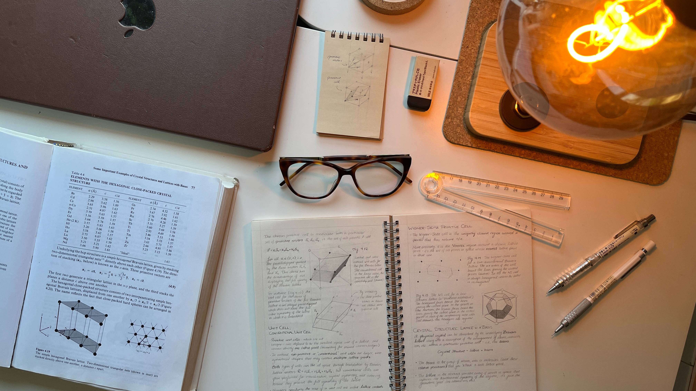

I designed, constructed, debugged, and characterized a first-generation tunnel diode oscillator (TDO) for cryogenic condensed-matter experiments. The instrument uses the negative differential resistance of a tunnel diode to sustain a high-frequency LC oscillation whose resonant frequency responds to changes in effective inductance. The long-term goal is contactless resistivity and superconductivity measurements on tiny samples at low temperatures and high pressures.

Conventional four-probe resistivity measurements require electrical contacts on the sample. That becomes difficult for the sub-millimetre samples used in high-pressure condensed-matter experiments. A TDO avoids direct contacts: the sample is placed inside an inductor coil, where the RF magnetic field induces eddy currents. Changes in sample conductivity alter the effective inductance of the coil and therefore shift the oscillator frequency.
At a superconducting transition, the electromagnetic penetration depth changes dramatically, making the resonant frequency an especially sensitive probe of superconductivity.
A hand-wound ~0.36 µH copper coil and 124 pF tank capacitance form the LC resonator. The tunnel diode supplies effective negative resistance to compensate circuit losses and sustain oscillation.
The components were mounted on a three-tier copper assembly: the top tier carried the tunnel diode and bias network, the middle tier provided electromagnetic shielding, and the lowest tier carried the LC tank.
The returning RF signal was amplified, mixed with a 14 MHz local oscillator, band-pass filtered, and measured on a Tektronix MDO3034 mixed-domain oscilloscope.
I measured the I–V characteristic at room temperature and 77 K and extracted negative differential resistances of roughly −307 Ω and −273 Ω, respectively.
Initially, the circuit appeared not to oscillate under normal operating conditions. A strange clue changed the direction of the debugging: touching the junction near the low-temperature bias network caused a ~23 MHz signal to become visible, while touching the same point with an electrically insulating object had no effect.
I added a 9.6 pF NP0 AC-coupling capacitor across the relevant path. Stable self-oscillation became immediately detectable without physical contact. This was the central engineering fix in the project and established that the oscillator design was fundamentally working.
I calibrated the remote bias-voltage readout and measured oscillator behaviour across the negative-differential-resistance bias window. A custom Python script communicated with the Tektronix MDO3034 over VISA/USB, converted RF waveform data to dBm, identified the spectral peak, performed sub-bin parabolic interpolation, extracted the −3 dB linewidth, and saved time-stamped data and plots.
The observed room-temperature self-oscillation frequency was approximately 23.1 MHz, close to the theoretical LC estimate of 23.8 MHz. Across the measured bias range, cooling from room temperature to 77 K produced a consistently positive frequency shift of roughly 78–106 kHz, with a mean near 97 kHz.
At 180 mV bias, the mixed-mode spectrum shifted from about 9.050 MHz at room temperature to about 9.147 MHz at 77 K. Adding the 14 MHz local-oscillator frequency places the underlying TDO peaks near 23.05 MHz and 23.15 MHz. The signal amplitude was also typically 2–3 dBm higher at 77 K, and the linewidth generally narrowed.
The project made the oscillator functional at cryogenic temperature, while also exposing the main limitations of the first-generation design. The three-tier stage is mechanically fragile, and the current FFT-based frequency readout is far less precise than the TDO itself can ultimately support.
Recommended next steps are to increase the AC-coupling capacitance, integrate a precision frequency counter for ppm-level resolution and automated sweeps, characterize long-term stability with Allan deviation, and rebuild the low-temperature assembly using a mechanically robust monolithic or etched-board design before moving toward measurements below 4 K.